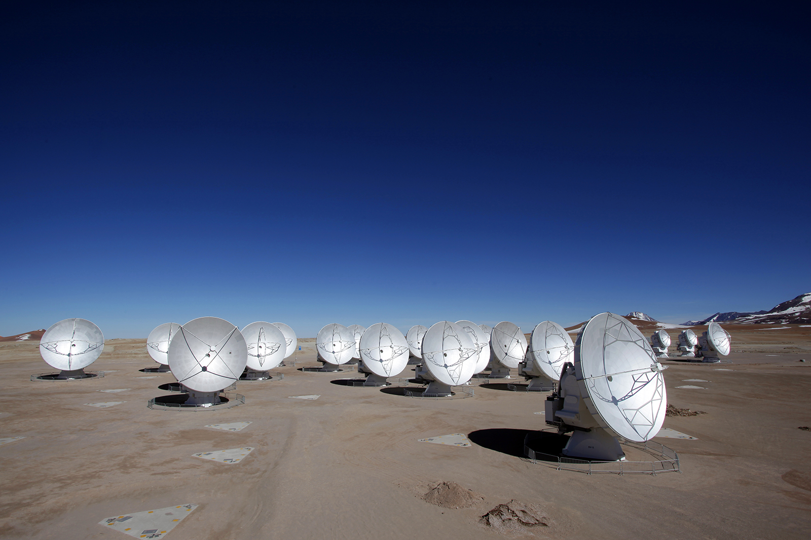

Themes
Set your presentation theme:
Beige (default) -
White -
League -
Sky -
Black -
Simple
Serif -
Blood -
Night -
Moon -
Solarized
The first photo of a black hole
- Dago Alexander Fonseca
- Camilo Andres Pinzon
- Jhon Emmanuel Torres
¿What is a black hole?
A black hole is not really a hole. It is an object in space with an incredible mass grouped in a very small area. All that mass creates a gravitational force so huge that nothing can escape, including light.
Acquire
A team created a network of telescopes known as the Event Horizon Telescope, or the EHT. They set out to capture an image of a black hole by improving upon a technique that allows for the imaging of far-away objects, known as Very Long Baseline Interferometry, or VLBI.
To see details in objects that are far away and appear small and dim from Earth, we need to gather as much light as possible with very high resolution, so they need to use a telescope with a large aperture.
To see details in objects that are far away and appear small and dim from Earth, we need to gather as much light as possible with very high resolution, so we need to use a telescope with a large aperture.
Possible objectives
- Sagittarius A*: interested the team because it is in our galactic backyard – at the center of our Milky Way galaxy, 26,000 light-years (156 quadrillion miles) away. (An asterisk is the astronomical standard for denoting a black hole.)
- M87*: One of the largest known supermassive black holes, M87* is located at the center of the gargantuan elliptical galaxy Messier 87, or M87, 53 million light-years (318 quintillion miles) away.
Telescopes
History
By 2017, the EHT was a collaboration of eight sites around the world – and more have been added since then. Before the team could begin collecting data, they had to find a time when the weather was likely to be conducive to telescope viewing at every location.
For M87*, the team tried for good weather in April 2017 and, of the 10 days chosen for observation, a whopping four days were clear at all eight sites!
Observation
Each telescope used for the EHT had to be highly synchronized with the others to within a fraction of a millimeter using an atomic clock locked onto a GPS time standard. This degree of precision makes the EHT capable of resolving objects about 4,000 times better than the Hubble Space Telescope. This degree of precision makes the EHT capable of resolving objects about 4,000 times better than the Hubble Space Telescope.
The recorded media were then physically transported to a central location because the amount of data, around 5 petabytes. The team is also working on generating an image of Sagittarius A* from additional observations made by the EHT.
parse
Provide some structure for the data’s meaning, and order it into categories.
Filter
Remove all but the data of interest.
Mine
Apply methods from statistics or data mining as a way to discern patterns or place the data in mathematical context.
Represent
Choose a basic visual model, such as a bar graph, list, or tree.
Refine
Improve the basic representation to make it clearer and more visually engaging.
Interact
Add methods for manipulating the data or controlling what features are visible.
Why It's Important

Allows us to test observation methods and theories, such as Einstein’s theory of general relativity
Theory of general relativity has directly been proven accurate for smaller-mass objects, such as Earth and the Sun, the theory has not yet been directly proven for black holes and other regions containing dense matter.

One of the main results of the EHT black hole imaging project is a more direct calculation of a black hole’s mass than ever before.
Zooming in to the Heart of Messier 87
Thanks
References
- https://www.jpl.nasa.gov/edu/news/2019/4/19/how-scientists-captured-the-first-image-of-a-black-hole/
- https://eventhorizontelescope.org/science